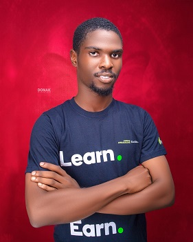

Omowaye Gbotemi-WDD 130

A product designer who focuses on optimizing users' experience to ensure a Seamless end-to-end interaction between a product and the user without neglecting the business needs. I am passionate about solving problems through research processes that translate user problems into solutions, putting empathy for the user as a key ingredient. Whenever I am not working, I spend time learning and improving my skills, and finally, I love playing video games and watching movies. I am currently based in River State, Nigeria, working on a personal project and collaborating with people. As a Product Designer at Davenport Microfinance Bank, my responsibility includes designing of all digital products, including the website, mobile apps, and in-house web and mobile applications that we use. Also I collaborate with the engineering team to understand what our clients and stakeholders need. In my role, I provide the Engineering team with designs, specifications, and documentation. This ensures seamless communication and facilitates successful product development.